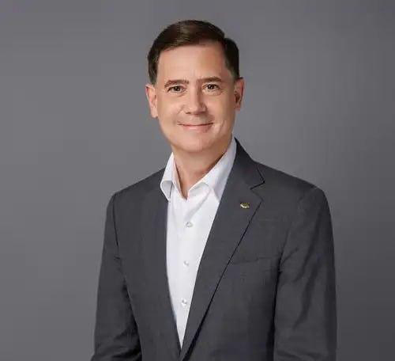
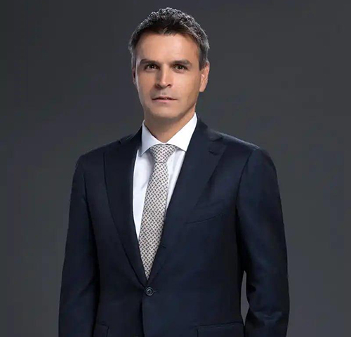
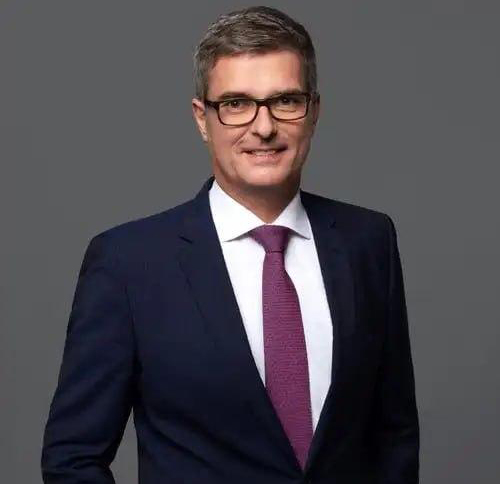
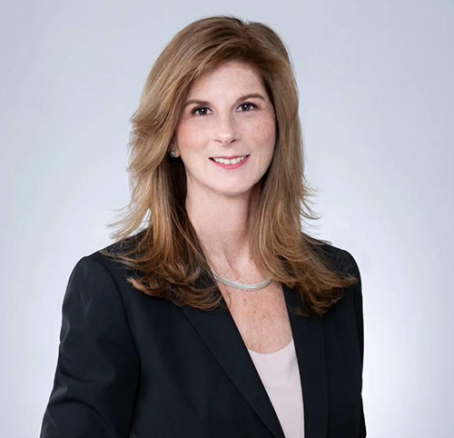
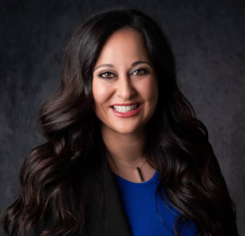

Leadership
Executive

Jorge is Kalawa’s founder and Chief Executive Officer since June 2007.
Developing innovative products/services, implementing precise solutions, and engaging in effective recruiting are at the forefront of Jorge’s leadership focus. He leads the Executive Committee, which sets the firm’s strategic direction, working across all business lines to ensure Kalawa is focused on its client’s most critical trading and investment objectives. Jorge is also Chairman of the Board of Directors.
Prior to founding Kalawa, Jorge spent fourteen years at Barclays Global Investors (BGI), which is now part of BlackRock, in various senior capacities including Head of Transition Management and Senior Portfolio Manager. Before working at BGI, he also worked for Baxter International and Conagra in finance roles.
Jorge is very active with the local community. He serves on the board of directors and finance committee for Make-A-Wish Greater Bay Area. Jorge also serves on the board of directors for Pangea Legal Services, a legal advocacy group for immigrant rights, as well as a member of the finance committee for the Community Foundation of Mendocino. Jorge also established the Founder’s Scholarship for immigrant college-bound students and, more recently, the Kalawa Foundation, a nonprofit entity focused on working with communities and organizations to promote diversity, education, and the well-being of children.
Jorge is a graduate of California State University, Fullerton with a Bachelors of Science in Finance. He is also a graduate of Columbia University with a MBA focus in securities analysis and a graduate of University of California, Berkeley with a MBA focus in business strategy. He currently holds security licenses 3, 7, 24, 27, 63, 66, and SIE.

Anthony joined Kalawa in 2008 as one of the original employees of Kalawa and is the firm's Chief Operating Officer. His previous roles at Kalawa included Chief Compliance Officer and Head of Operations. Anthony was formerly the Chief Compliance Officer of Joseph A. Sangimino Inc., a firm tailored towards servicing institutional clients. Anthony also served as Compliance Officer and Head of International Operations at Rosenblatt Securities.
Anthony graduated from Villanova University with a Bachelor of Science degree and currently holds security licenses 7, 14, 24, 25, 53, 57, 63, 65, 87, 99 and SIE.
Investment Banking
John joined Kalawa in 2017 as a Managing Director of Capital Markets and has over 28 years of experience in capital markets, including capital markets coverage, execution, sales and investment management. At Kalawa, he is responsible for leading the firm’s debt and equity capital markets activities, originating transactions and overseeing corporate share repurchase programs.
Prior to joining Kalawa, John spent twelve years in senior capital markets roles at diverse investment banking firms. During that time, he built and managed relationships with Fortune 500 clients and has executed more than 700 transactions totaling over $1 trillion across a broad range of asset classes.
John graduated from the University of Illinois with a Bachelor of Science in Finance and currently holds security licenses 7, 24, 63 and 79. He was awarded the CFA® designation in 2003.
Jose joined Kalawa in May 2016 as Director of Capital Markets. With thirty years of financial services experience, he is responsible for capital markets initiatives across debt and equity offerings to corporate clients and syndicate. Prior to joining Kalawa, Jose held roles in capital markets, institutional sales and trading at CAVU Securities, Kota Global Securities and Utendahl Capital Partners
Jose graduated from Baruch College with a Bachelor of Business Administration and currently holds security licenses 7, 24, 55, 63 and 79.
Global Equity Trading

Kevin was named Head of Global Equity and Sales trading in July 2023. He joined Kalawa in March 2013. Prior to joining Kalawa, he worked at Selia Securities and Susquehanna International Group. In those roles, he specialized in special situations and structured products.
Kevin graduated from Drexel University with a Bachelor of Arts degree and currently holds security licenses 7, 24, 57, 63, 65, 86, 87, and SIE.
Connie joined Kalawa in August 2012, and was instrumental in opening the Chicago office. At Kalawa, she is Director of Institutional Sales for global equity trading. She has over 35 years of investment industry experience on both the buy and sell side. Most recently she was Director of Institutional Sales Trading at JMP Securities. Prior to JMP she was a Director of Transition Management Sales at Knight Equity. She spent 4 years as a Managing Director at Banc of America Securities where she oversaw Institutional Equity Sales Trading in the Mid-West and covered large hedge fund clients. For nine years she was Director of Trading for Driehaus Capital Management where she managed the global equity team of eight and built one of the first emerging markets trading desks in the country.
Connie also has extensive knowledge and experience with high-touch, algorithmic, dark-pool, and program trading execution strategies in addition to significant sales and sales management experience.
Connie graduated from Northern Illinois University with a Bachelor of Science degree in Business Management, a Certificate in Diversity and Inclusion from Cornell University, and currently holds security licenses 7, 24, 55, 63, 66, and SIE.
Equity Exchange
Jonathan joined Kalawa in May of 2018 and is Head of Equity Exchange. Jonathan brings with him over 31 years of experience in the industry working with large institutional clients.
Jonathan received his B.A. from the University of Iowa. He currently holds securities licenses 7, 24, 57, 63 and SIE

Ryan is a Director and Senior Institutional Broker at Kalawa's Equity Exchange division, where he plays a key role in trading and allocating equities. With over two decades of experience, Ryan brings deep market knowledge and a strong client-focused approach to his work. At Kalawa, he takes pride in building lasting relationships and enjoys collaborating with clients to help meet their needs.
Ryan graduated from the University of Central Florida with a Bachelor of Arts degree and currently holds security licenses 7, 24, 55 and 63 and 79.
Fixed Income Trading
Stephanie joined Kalawa in July of 2017 as a Managing Director of Institutional Fixed Income. Stephanie comes to Kalawa with over 27 years of industry experience. At Kalawa, Stephanie is responsible for trading Investment Grade Corporate Bonds and Agencies.
Stephanie currently holds security licenses 63 and SIE.
Brian joined Kalawa in April 2017 bringing over 30 years of experience in trading all manner of fixed income securities. Brian began specializing in all CMO, Spec Pools and Asset Backed Securities in the late 1980s. Brian has also been in the position of sales manager as well as head of trading for a large regional firm.
Brian currently holds security licenses 5, 7, 8, 9, 10, 63, and SIE.
Robert joins Kalawa with over 35 years experience in Finance including Equity Trading, Fixed Income Trading/Sales, demonstrating a history of trading, sales, management.
Robert currently holds security licenses 7, 55, 57, 63, 79, and SIE.
ETF Sub-Advising
Dustin joined Kalawa in 2012 and started the firm’s ETF Sub-Advisory service in 2014 as Kalawa Capital Management. Dustin has extensive experience in the ETF space and has been a part of several prominent buildouts of new ETF businesses and hundreds of ETF fund launches. He currently serves as Chief Investment Officer of Kalawa Capital.
Dustin graduated from the University of Iowa with a Bachelor of Arts degree and currently holds security licenses 7, 24, 63, 65, and SIE. He is also a CFA® Charterholder.
Ernesto joined Kalawa in 2015. He currently heads the portfolio management group at Kalawa Capital and is responsible for the investment process and day-to-day management of sub-advised ETFs. Previously Ernesto worked at Barclays Global Investors and Blackrock as a Portfolio Manager for several iShares portfolios. He was responsible for all aspects of portfolio management across domestic and international portfolios totaling $40 billion in global ETF AUM. Ernesto was also responsible for launching, managing, and driving the local Latin American ETF products for the portfolio management group; focusing on Brazil, Colombia and Mexico.
Ernesto graduated from the University of California, Davis, with a Bachelor of Arts degree and currently holds security licenses 7, 63, and SIE. He is also a CFA® Charterholder.
Christine Johanson joined Kalawa in 2023 and leads the full lifecycle management of ETF portfolios, including benchmark rebalances, corporate actions, cash flow management, and custom basket creation. She brings deep expertise in navigating complex portfolio structures and delivering operational precision in a dynamic ETF environment. Christine has over a decade of experience in institutional transition management, having held senior roles at BlackRock and Russell Investments. At Russell, she served as Global Head of Fixed Income Transitions, overseeing the execution of global mandates with a focus on risk mitigation and market impact reduction.
Christine graduated summa cum laude from the University of Missouri with a Bachelor of Science/Bachelors of Arts degree and holds security licenses 3, 7, and 63. She is also a CFA® Charterholder
Active Investment Management
Egor joined Kalawa in 2021 to lead the development and management of Kalawa Global Investors’ International Large Cap and International Smaller Companies (SMID) Equity Strategies. He has over 25 years of international and global equity portfolio management and research experience, working at diverse asset management firms, including Blue Zone Global Investors, RMB Capital, ENR Investments, Tradewinds Global Investors (Nuveen), and Thornburg Asset Management.
Egor received his M.B.A. from The University of Illinois at Chicago with concentration in accounting and finance. He is also a graduate of The Moscow State University with a B.A. in economics and management. Egor was awarded the CFA® designation in 2000 and is a member of the CFA Institute and the CFA Society of Orange County, California.
Kati joined Kalawa Global Investors in 2021 with over 20 years of international equity research and portfolio management experience, working with various investment firms, including Blue Zone Global Investors, Cartica Management, and Artio Global Investors.
Kati earned an M.Sc. in Business Administration, Finance, European studies from Corvinus University of Budapest, a B.Sc. in Economics from Corvinus University of Budapest, and a Certificate in Finance from the Stockholm School of Economics. She is also a CFA® Charterholder.
Operations
Sandro joined the Equity Exchange division of Kalawa Securities in 2010. In his current role as Director of Clearing Operations, Sandro is responsible for Back Office operations inclusive of P&S, settlement services and project management. Sandro brings over 40 years of industry experience and has played integral roles at various start-ups.
Sandro graduated from Richard J. Daley College with an Associate of Arts degree and currently holds security licenses 7, 99 and SIE.
With a strong foundation in both domestic and international markets, Lijo supports operations across Equity X, fixed income, and equities. Known for his hands-on approach, he is a dedicated and motivated professional who takes pride in delivering reliable results under pressure. Lijo bring a strong work ethic, a commitment to continuous improvement, and proven leadership as a team manager. Lijo's focus is always on building efficient processes, supporting cross-functional teams, and driving success through collaboration and accountability.
Lijo graduated from the University of Buffalo.
Compliance
Elois is a financial services professional with over 20 years of experience in trading floor operations, regulatory compliance, and governance. She holds an MBA and several financial licenses.
Elois serves on the boards of academic, philanthropic, and industry organizations. She is passionate about mentoring early-career professionals and supporting first-generation college families. A proud mother of two, she remains active in her children’s academic communities.
Katherine was named Chief Compliance Officer of Kalawa Capital Management in January 2025. She joined Kalawa in June 2024. Prior to her work at Kalawa, Katherine was a compliance officer at Blackrock. Prior to that, she held roles in compliance and regulatory administration at large financial institutions.
Katherine graduated from Quinnipiac University with a Bachelor of Arts degree and currently holds security license 65.
Lee was named Chief Compliance Officer of Kalawa Global Investors and Kalawa Wealth Management in January 2025. He joined Kalawa in April 2009 and in January 2018 become Kalawa’s Director of Marketing. In 2021, he added Compliance Officer and Financial and Operations Principal (FinOp) to his job responsibilities. Prior to his administrative roles, Lee spent thirty years as an institutional equity sales trader, demonstrating a history of management, sales, trading, compliance, and marketing.
Lee graduated from Claremont McKenna College with a Bachelor of Arts degree and from the Amos Tuck School of Business Administration at Dartmouth College with a Masters of Business Administration, and currently holds security licenses 3, 7, 24, 52, 53, 63, 65, 99, and SIE.
Administration

Annette joined Kalawa in 2017 as Vice President and Senior Accountant, quickly earning a promotion to Director of Accounting the following year. In her leadership role, she oversees and optimizes all aspects of Kalawa’s accounting operations, ensuring accuracy, compliance, and efficiency across processes and procedures. Annette brings a wealth of expertise to her role with over 15 years of experience spanning accounting, tax, and risk management. Known for her attention to detail and collaborative approach, Annette is recognized for implementing process improvements and fostering cross-functional teamwork. Originally from the Greater Philadelphia area where her career started at Deloitte Tax and later joining South Jersey Industries. Annette joined Kalawa in Orinda, CA before transitioning to Kalawa’s Chicago office in 2019. Annette balances her professional achievements with a strong commitment to family and community, embodying both dedication and enthusiasm in every aspect of her life and work.
Annette graduated from Cabrini College with a Bachelor of Science degree.

Annette joined Kalawa in September 2018 as an Associate/HR Assistant. In 2020, she was named Director of Human Resources.
Annette graduated from Santa Clara University with a Bachelor of Science degree.
Guadalupe serves as an assistant to the C-Suite, bringing organization, discretion, and a proactive spirit to the heart of the firm’s operations. In addition to managing executive schedules and priorities, she plays a key role in driving internal initiatives that strengthen team culture and boost morale. Guadalupe is known for her reliability, positive energy, and commitment to fostering a collaborative and supportive workplace.